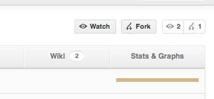
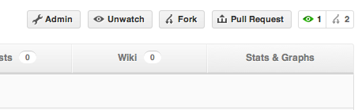

Esta guía asume conocimientos previos sobre Git y el uso de la línea de comandos; asume además que quien está leyendo tiene sentido común y sabe usar el Internet. Está enfocado exclusivamente en GitHub.com, sin embargo se habla de Github cuando sea extrictamente necesario, lo demás se hace en una línea de comandos.
Para descargar un poyecto basta con hacer un clone del mismo. Por ejemplo, suponiendo que el usuario es 'casidiablo' y el proyecto creado fue 'persistence':
$ git clone git@github.com:casidiablo/persistence.git
También es posible clonar repositorios cuyo remoto apunte a un HTTPS, lo cual es útil cuando estamos detrás de un proxy:
$ git clone https://casidiablo@github.com/casidiablo/persistence.git
Cuando se han hecho cambios, es posible hacer un commit selectivo de los archivos a los cuales se les va a hacer commit. Esto se hace con el
comando git add nombre_del_archivo, sin embargo es posible añadir todos los cambios (modificaciones, nuevos archivos o archivos
borrados, etc.) usando el comando git add -A. Una vez que se han añadido los archivos a los cuales se les va a hacer commit, se
debe hacer commit y luego push así:
$ git commit -m 'Un comentario para el commit' $ git push origin master
El comando git push recibe como parámetro el nombre del remote a donde se va a hacer commit (el remote por defecto es 'origin'
aunque el nombre no es obligatorio), y el nombre de la rama principal (por defecto 'master' aunque tampoco es obligatorio llamarla así).
git pull el cual descarga los cambios y trata de mezclarlos con el
repositorio actual. Sin embargo, la mejor manera de hacer estas cosas, en mi humilde opinión, es hacer primero un fetch y luego un merge manualmente.
Por ejemplo:
$ # suponiendo que estamos en el repositorio... $ git fetch # esto descarga los cambios $ # suponiendo que los cambios estaban en la rama master y actualmente nos encontramos en esa rama... $ git diff origin/master # esto muestra las diferencias entre el estado de la rama actual y la remota $ git merge origin/master # esto mezcla los cambios remotos con los locales
Esta característica de GitHub permite clonar un repositorio público ajeno, de tal forma que podamos hacer modificaciones en el código. Basta con ir al repositorio al cual se va a hacer fork y hacer click en el botón Fork:
Esto creará un nuevo repositorio en nuestra cuenta con el mismo nombre que el ajeno. Por ejemplo: https://github.com/mailinator/persistence
La idea de los fork es poder modificar el código de otro desarrollador para cosas como corregir defectos, añadir nuevas funcionalidades, etc. Para trabajar sobre un fork basta con clonar el repositorio clonado, hacer commit y push como se explicó anteriormente y posteriormente sugerir un Pull Request al dueño del repositorio. Esto se hace desde la página de nuestro repositorio en donde verá este nuevo botón:
Al hacer click debemos llenar un formulario con la información de los cambios hechos al repositorio. Este le llega en forma de mensaje al dueño del repositorio, quien está en la libertad de aceptar o rechazar los cambios.
Algunos cambios conllevan conflictos, es decir, no es posible hacer una mezcla automática (git merge). Si los cambios sugeridos
en el pull request son posibles de hacer, GitHub habilitará este botón:
Si no es posible hacer un pull automático es necesario agregar un nuevo remoto a nuestro repositorio apuntando al repositorio del usuario que ha sugerido el Pull Request. Una vez hecho esto, es necesario hacer un fetch como se mostró anteriormente, hacer merge, resolver los conflictos y hacer push. Por ejemplo:
$ git remote add foo git://github.com/casidiablo/prueba.git $ git fetch foo $ git merge foo/master $ # se hacen los cambios necesarios para corregir los conflictos $ git add -A $ git commit -m 'Mensaje' $ git push origin master
Recordemos que Git es un sistema de control de versiones decentralizado... si quiere actualizar un fork basta con añadir el repositorio original como un nuevo remoto, hacer fetch y merge:
$ git remote add original git://github.com/mailinator/prueba.git $ git fetch original $ git merge original/master $ git push origin master
Un branch o rama es una nueva línea de desarrollo que se desprende de la línea principal (master). Los branches son utilizados para realizar trabajo en paralelo sobre un mismo repositorio. Los casos más comunes de uso son: ramas en donde se realiza el desarrollo principal (en master solo se ponen los cambios importantes o releases), ramas de experimentación, ramas de correccion de errores, etc.
Para crear una rama basta con ejecutar el comando git checkout -b:
$ git checkout -b develop # crea una rama llamada develop a partir de la rama actual
Luego, es posible seguir trabajando sobre el repositorio normalmente. Recuerde que los cambios realizados sobre una rama queda en esa rama
por siempre, a menos que se mezclen (merge) con otra rama. Para saber en qué rama se encuentra el comando git status es útil.
Una vez los cambios se han hecho, es posible subir la rama al repostorio remoto; esto se hace con el comando push:
$ git push origin develop # git push nombre_remoto nombre_rama
Si queremos unir dos ramas es necesario mezclarlas con el comando git merge. Git siempre intentará hacer un fast-fordward,
es decir, intentará unir las ramas:
$ #suponiendo que estamos en la rama develop y ya hicimos commit de los cambios $ git checkout master $ git merge develop
Algunas veces queremos que las ramas queden separadas (es decir, que los cambios hechos en una no queden en la otra), para ello debemos evitar el fast-fordward así:
$ git merge --no-ff develop
Solo algunas ramas deberían existir en los repositorios remotos. Por ejemplo, una rama que se cree para experimentar con una nueva característica
no debería estar en el remoto, así que una vez que se ha mezclado con una rama de desarrollo principal o cuando se quiera descartar es posible borrarla
con el comando git branch -D nombre_rama